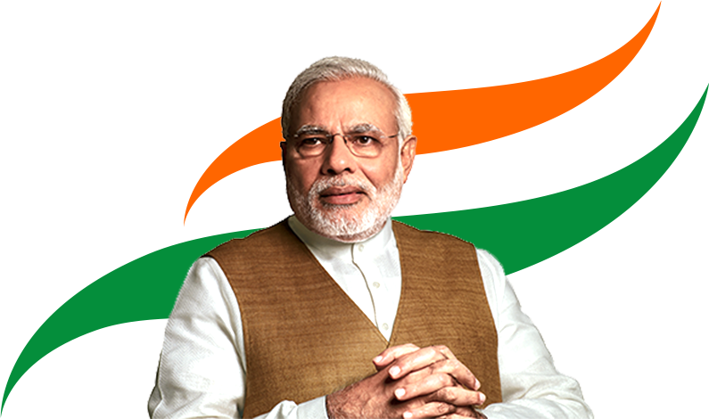

Narendra Modi
Prime Minister of India

Narendra Damodardas Modi is an Indian politician serving as the 14th and current Prime Minister of
India since 2014. He was the Chief Minister of Gujarat from 2001 to 2014, and is the Member of
Parliament for Varanasi. Modi, a member of the Bharatiya Janata Party, is a Hindu nationalist and
member of the right-wing Rashtriya Swayamsevak Sangh. He is a former RSS pracharak.
About
Narendra Damodardas Modi was born on 17 September 1950 to a family of grocers in Vadnagar, a town in
Gujarat. His father, Damodardas Mulchand Modi, was a Chimanbhai Patel, a grocer and a local leader
of the Rashtriya Swayamsevak Sangh (RSS). His mother, Hiraben, was a housewife. Modi has two
younger brothers, one of whom, Prahlad, died in infancy. Modi was introduced to the RSS at the age
of eight, beginning a long association with the organisation. He left home at the age of 17 to live
in an RSS hostel near the university campus and later became a pracharak (full-time worker) for the
RSS. He returned to Vadnagar to marry Jashodaben Chimanlal in 1967, and they had two daughters.
Narendra Damodar Das Modi (born 17 September 1950) is an Indian politician serving as the 14th and
current prime minister of India since 2014. Modi was the chief minister of Gujarat from 2001 to 2014
and is the Member of Parliament from Varanasi. He is a member of the Bhartiya Janata Party (BJP) and
of the Rastriya Swayamsevak Sangh (RSS), a right-wing Hindu nationalist paramilitary volunteer
organization. He is the longest serving prime minister from outside the Indian National Congress.
Modi was born and raised in Vadnagar in northeastern Gujarat, where he completed his secondary
education. He was introduced to the RSS at age eight. He has discussed having to work as a child in
his father's tea stall in the Vadnagar railway station, which has not been reliably corroborated. At
age 18, Modi was married to Jashodaben Chimanlal Modi, whom he abandoned soon after. He first
publicly acknowledged her as his wife more than four decades later when required to do so by Indian
law, but has made no contact with her since. Modi has asserted he had travelled in northern India
for two years after leaving his parental home, visiting a number of religious centers, but few
details of his travels have emerged. Upon his return to Gujarat in 1971, he became a full-time
worker for the RSS. After the state of emergency was declared by prime minister Indira Gandhi in
1975, Modi went into hiding. The RSS assigned him to the BJP in 1985 and he held several positions
within the party hierarchy until 2001, rising to the rank of general secretary.
Journey
Modi was elected to the Lok Sabha in 1991 from Vadodara, Gujarat. He was re-elected in 1996, 1998,
2004, 2009 and 2014. He was the Minister of State for External Affairs in the Atal Bihari Vajpayee
government from 1998 to 1999. He was the Chief Minister of Gujarat from 2001 to 2014. He was the
Chairman of the BJP's election campaign committee for the 2014 general election. He was sworn in as
the Prime Minister of India on 26 May 2014, succeeding Manmohan Singh. He was re-elected in the 2019
general election, defeating the incumbent Congress party. He is the first prime minister born after
India's independence in 1947. He is the first prime minister to have been born in Gujarat. He is the
first prime minister to have been born in a Gujarati family. He is the first prime minister to have
been born in a family of grocers. He is the first prime minister to have been born in a family of
tea stall owners. He is the first prime minister to have been born in a family of tea stall owners.
He is the first prime minister to have been born in a family of tea stall owners. He is the first
prime minister to have been born in a family of tea stall owners. He is the first prime minister to
have been born in a family of tea stall owners. He is the first prime minister to have been born in
a family of tea stall owners. He is the first prime minister to have been born in a family of tea
stall owners. He is the first prime minister to have been born in a family of tea stall owners. He
is
the first prime minister to have been born in a family of tea stall owners. He is the first prime
minister to have been born in a family of tea stall owners. He is the first prime minister to have
been born in a family of tea stall owners. He is the first prime minister to have been born in a
family of tea stall owners. He is the first prime minister to have been born in a family of tea
stall
owners. He is the first prime minister to have been born in a family of tea stall owners. He is the
first prime minister to have been born in a family of tea stall owners. He is the first prime
minister to have been born in a family of tea stall owners. He is the first prime minister to have
been born in a family of tea stall owners. He is the first prime minister to have been born in a
family of tea stall owners. He is the first prime minister to have been born in a family of tea
stall
owners. He is the first prime minister to have been born in a family of tea stall owners. He is the